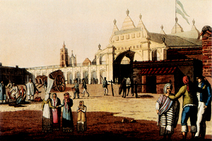
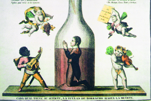
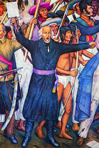

Lezione 15  L’indipendenza dell’America Latina
L’indipendenza dell’America Latina

-
360
510
-
0
765
-
85
320
-
380
488
-
320
465
-
105
350
-
105
470
-

BUENOS AIRES
La piazza del mercato di Buenos Aires agli inizi dell’Ottocento in una incisione italiana che ne evidenzia gli aspetti folcloristici.

SPAGNA
Invasione francese della Spagna. Il re Ferdinando VII viene cacciato. Giuseppe Bonaparte, fratello maggiore di Napoleone, viene da lui nominato re di Spagna nel 1808. Ha un debole ascendente sulla popolazione spagnola e si dimostra totalmente inetto al governo del paese e delle colonie. Quest’incisione satirica spagnola lo raffigura chiuso in una bottiglia di vino: un feroce riferimento al suo alcolismo.-

MESSICO
Il prete Hidalgo guida la rivolta antispagnola del 1810 in un murale dipinto nel 1929 dall’artista messicano Diego Rivera, celebre per la sua militanza politica di ispirazione trotskista.
BUENOS AIRES
Gli anni Ottanta del 1700 vedono frequenti rivolte nelle travagliate colonie sudamericane, che non assumono tuttavia toni radicali antigovernativi. Pesanti insidie vengono invece dall’esterno, poiché l’Inghilterra, seguita da Francia e Olanda, pratica da tempo un intenso ed esteso contrabbando e altre pratiche illegali, arrivando addirittura ad occupare Buenos Aires nel 1806. SANTIAGO DEL CILE
Tra il1808 e il 1810 i consigli municipali delle grandi città coloniali costituiscono giunte cittadine finalizzate alla conquista dell’indipendenza.MESSICO
1810: Il prete Hidalgo dichiara l’abolizione della schiavitù e dà inizio a una rivolta antispagnola. Promette agli indios la restituzione delle terre che la conquista spagnola gli aveva tolto trecento anni prima.HAITI
Nella colonia francese di Hispaniola scoppiano, nel 1791 e nel 1801, due rivolte di schiavi. La Francia manda un esercito per reprimerle, che viene però decimato dalle malattie e dagli scontri con i ribelli. Nel 1804 i Francesi si ritirano dall’isola, che viene ribattezzata Haiti dagli ex schiavi. Qualche anno dopo, nel 1821, anche la parte orientale dell’isola, colonizzata dagli spagnoli, diventa indipendente.